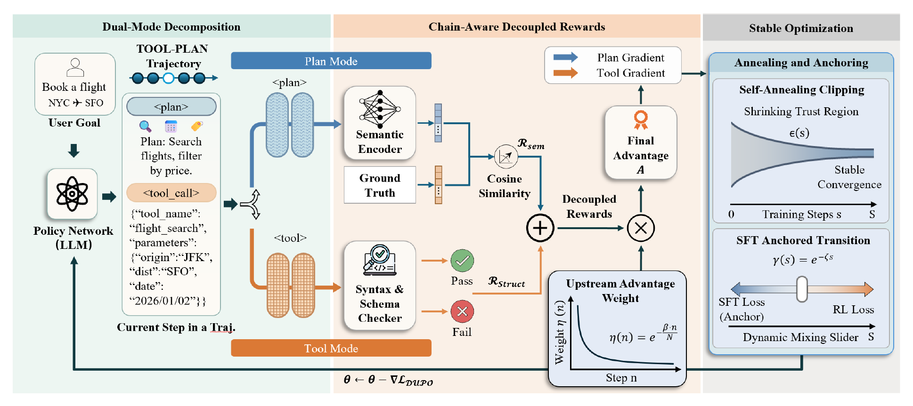

Plan, then call a tool
Each action pairs a <plan> span with a structured <tool_call> span, making the trajectory explicit.
Dual-Mode Unified Policy Optimization
for Tool-Using Agents
A training recipe that represents each action as a natural-language plan followed by an executable tool call, with mode-specific rewards and a continuation schedule built on verl.
DUPO structures trajectories into PLAN and TOOL modes, assigns credit through chain-aware decoupled rewards, and uses SFT anchoring and adaptive clipping to stabilize policy optimization.

Each action pairs a <plan> span with a structured <tool_call> span, making the trajectory explicit.
The released reward path checks plan content, tool-call format, tool names, and arguments.
A verl-based training core combines GRPO with a decaying SFT anchor and an adaptive upper clipping parameter.
Clone the repository and run the CPU-only release and reward checks. Training requires a configured Linux environment with CUDA-capable GPUs.
git clone https://github.com/dupo-project/dupo-project.github.io.git
cd dupo-project.github.io
# CPU-only checks (Python 3.10+)
python3 scripts/check_release.py
python3 scripts/smoke_reward.py
# See docs/TRAINING.md for GPU training.